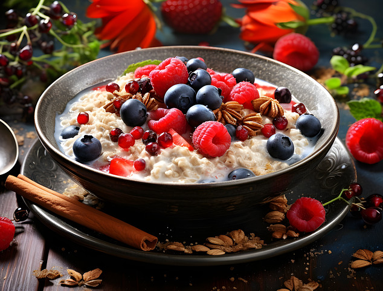

Berry Oatmeal

Image by Ivana Tomášková from Pixabay
Description
A very berry oatmeal recipe to start off your day with a healthy breakfast that will power your through your day.
Ingredients
- 1 cup rolled oats
- 2 cups of water
- 1 to 2 bananas, sliced
- 1/4 cup frozen blueberries
- 1/4 cup frozen raspberries
- 1/4 cup frozen strawberries
- Fresh berries of your choice (for topping)
Granola of your choice (for topping)
Steps
- Add all the ingredients to a saucepan over medium low heat.
- Gently stir and mix in the ingredients while they come to gentle simmer.
- Continue to stir as the oatmeal simmers for 3 to 5 minutes, or until it reaches your desired consistency.
- Once ready, pour into a bowl and let cool for several minutes.
- Top with fresh berries and granola of your choice and enjoy!
Home